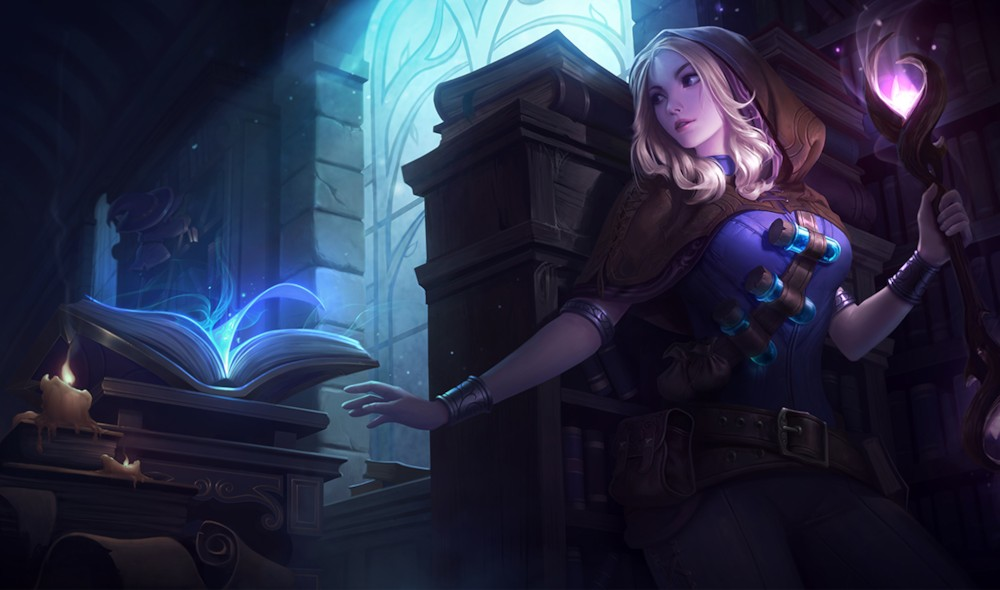
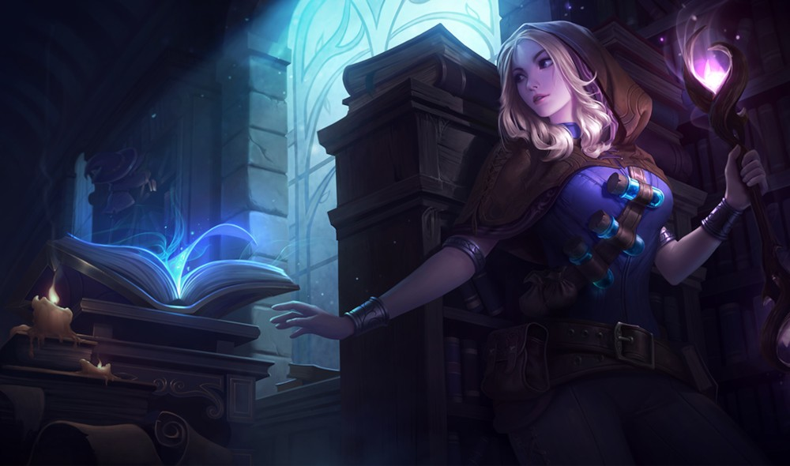
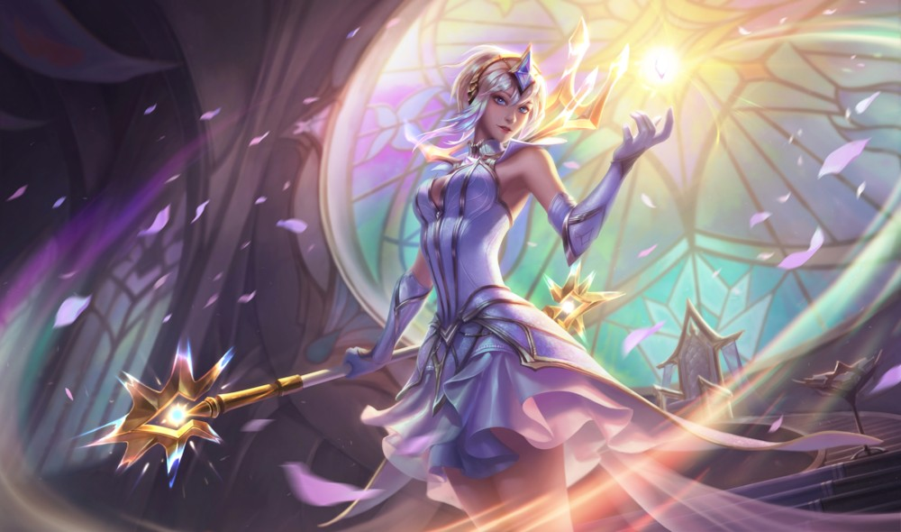
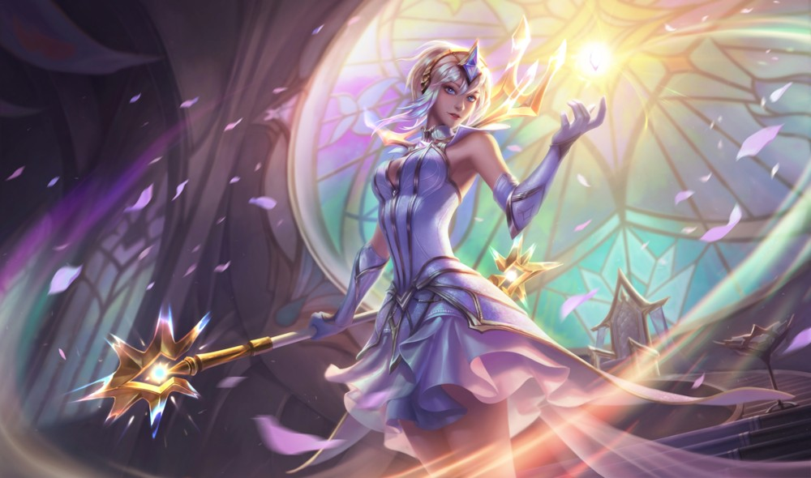

스토리
럭스라는 이름으로 불리기를 좋아하는 럭산나는 오빠 가렌과 함께 명망 높은
크라운가드 가의 자손으로 태어났다. 데마시아의 도시 하이 실버미어에 자리
잡은 크라운가드 가는 대대로 국왕을 수호하는 의무를 수행하고 있었다.
럭스의 조부는 폭풍 이빨 전투에서 왕의 목숨을 구했으며, 고모인 티아나는
럭스가 태어나기도 전에 불굴의 선봉대 사령관으로 임명됐다.
가렌은 소년티를 막 벗었을 무렵 군에 입대해 왕위 수호의 의무를 열성적으로
수행했다. 가렌이 떠난 후, 가족들은 럭스가 영지를 관리하는 일을 돕길
원했다. 하지만 럭스는 어릴 때부터 그 일이 좋았던 적이 없었다. 럭스는
밖으로 나가 세상을 탐험하고 싶었다. 데마시아의 성벽 뒤에, 그리고 국경
너머에 무엇이 있는지 보고 싶었다. 럭스는 오빠 가렌을 우러러봤지만,
자신에게 개인적인 욕심은 버리라고 말할 때마다 가렌이 미웠다.
가정교사들은 럭스가 크라운가드 가문의 의무를 충실히 수행하는 데 일생을
바치도록 지도했다. 하지만 럭스는 그들의 가르침에 의문을 품거나 다른
관점을 제시하고, 심지어 그들도 모르는 지식을 탐구하면서 가정교사들을
힘들게 했다. 하지만 럭스의 삶에 대한 열정과 주변 사람들마저 물들이는
낙천적인 성격 때문에 가정교사들은 차마 화를 낼 수 없었다.
변화의 시간이 가까워지고 있었지만 아무도 알아차리지 못했다. 한때 마법은
룬테라를 파멸 직전까지 몰고 갔고, 생존자들은 마법이 금지된 왕국,
데마시아를 건국했다. 마법의 유혹에 빠져 타락해버린 순수한 영혼들에 관한
전설은 왕국에 널리 퍼져있었다. 실제로 럭스와 가렌의 숙부도 수년 전 추방된
마법사에게 죽임을 당했다.
거대한 산맥 너머에서는 무서운 소문이 들려왔다. 세상 어딘가에서 마법이
다시 힘을 키우고 있다고...
그리고 어느 날 밤, 말을 타고 집으로 돌아가던 럭스는 칼날늑대 무리에게
습격을 당했다. 두려움과 절망에 빠진 럭스의 몸에서 갑자기 강력한 마법의
빛이 뿜어져 나왔다. 빛은 늑대 무리를 궤멸시켰지만, 그 광경을 본 럭스는
두려움에 떨었다. 럭스의 몸에는 크라운가드 가문의 피뿐만 아니라,
데마시아가 두려워 마지않는 마법의 힘도 흐르고 있었다.
자신은 이제 악한 존재인가? 감금되고 추방되어 마땅한 혐오스러운
존재인가? 공포와 의구심이 럭스를 사로잡았다. 뭐가 됐건 간에 마력을
지녔다는 사실을 들키게 되면 크라운가드 가문에 씻을 수 없는 수치를 안겨 줄
것이 뻔했다.
가렌이 자주 집을 비우는 바람에, 럭스는 하이 실버미어의 크라운가드 저택에
홀로 남겨질 때가 많았다. 럭스는 점차 자신의 몸속에 흐르는 마법에
익숙해졌다. 그러면서 마법의 빛을 잠재우려고 애쓰며 밤을 지새우는 일도
점점 줄어들었다. 럭스는 아무도 모르게 마법의 힘을 시험했다. 저택 마당에
내리쬐는 햇살을 조종해 고체화하기도 하고, 빛나는 작은 구체를 만들어 손에
쥐어보기도 했다. 럭스는 이 비밀을 아무에게도 털어놓지 않을 작정이었다.
16살이 되던 해, 럭스는 아버지 피테르와 어머니 오가사와 함께 위대한 도시
데마시아에 있는 관사로 갔다. 불굴의 선봉대에 입단하는 가렌을 축하할
목적이었다.
위대한 도시는 럭스의 눈을 사로잡았다. 도시는 그야말로 모든 백성이
한마음으로 받드는 데마시아 왕국의 숭고한 이념 그 자체였다. 그리고 병들고
가난한 자들을 돕는 빛의 사자 수도회에 대해서도 알게 되었다. 가족과 함께
궁중 행사에 참여하는 와중에, 럭스는 빛의 사자 수도회의 광휘단 소속
성기사인 카히나와 친해졌다. 카히나는 크라운가드 저택 정원에서 럭스와
함께 훈련하며 '무예'를 가르쳐 주었다.
럭스가 수도에서 보내는 시간이 길어질수록, 세상을 보는 시야도 넓어졌다.
럭스는 전에 몰랐던 역사를 배웠고, 좀 더 다채로운 세상에 눈을 떴다. 그리고
데마시아의 방식 외에도 다양한 삶의 방식이 있다는 사실을 깨달았다. 럭스는
조국을 무척이나 사랑했지만, 데마시아가 자신과 같은 마법사들을 좀 더
포용할 수 있는 날이 오기를 고대했다.


 

 
